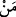

Yahûdî: Doğru söyledin.” dedi. Pekâla, niçin çocuk ya amcalarına benzer ve onda
dayılarına benzer bir taraf olmaz veya dayılarına benzer de amcalarına benzer bir yönü
bulunmaz?”
Peygamberimiz (s.a.) buyurdu ki: “Kadın veya erkekten hangisinin suyu diğerine
galebe ederse, çocuk o tarafa çeker.”
Yahûdî: “Doğru söyledin ey Muhammed” dedi. Sonra, Benî İsrâîl’in kendine haram
kıldığı yiyeceklerden sordu.
Peygamber (s.a.) buyurdu: “Ya’kûb (a.s.) çok şiddetli bir hastalığa tutulmuştu. Şifâ
verdiği takdirde Cenâb-ı Hakk’a şükür olarak en sevdiği yiyecekleri yemeyeceğini
nezretti. En çok sevdiği yiyecek; deve eti ve en çok sevdiği içecek de deve sütü idi.”
Yahûdî, “Doğru söyledin deyip; bu sefer de “cennete ilk indirilen şeyi” sordu.
Peygamberimiz: “Balıktır” dedi.
Yahûdî: “Bunu da bildin, şimdi son bir sorum kaldı. Eğer bunu da bilirsen, sana inanır
ve tâbi’ olurum” deyip ona: “Allah’dan geldiğini söylediğin âyetleri hangi meleğin
getirdiğini” sordu.
Peygamberimiz: “Cebrâîl’dir” deyince Yahûdî:
“İşte o bizim düşmanımızdır.” dedi. Çünkü o ölüm, azâb, gemi fâciası ve diğer
musîbetler için inen azâb meleğidir. Bizim elçimiz Mîkâîl’dir. Çünkü o bereket, müjde
ve rüzgârları haber veren rahmet meleğidir” dedi.
Bunun üzerine Hz. Ömer: “Sizi Cebrâîl’e düşman yapan nedir?” diye sordu. Yahûdî
şöyle dedi:
“Onun bize pek çok kötülüğü olmakla beraber en büyük kötülüğü şudur: Allah Teâlâ,
Mûsâ Peygamber’e, Beytü’l-Makdis’in Buhtu Nasr denen bir adam zamanında
yıkılacağını ve onun yıkacağı zamanı, haber verdi. O zaman gelince, Benî İsrâîl’in en
kuvvetlilerinden birini onu getirmesi için gönderdik. Buhtu Nasr’ı Bâbil’de daha henüz
zayıf bir çocuk olduğu halde buldu. Onu öldürmek için tuttuğunda Cebrâîl buna engel
olup şöyle dedi:
“Eğer bu çocuk sizi öldürmek için emrolunduysa siz onu bulamazdınız, eğer aradığınız
çocuk bu değilse neye dayanarak bu günahsızı öldürmüş olacaksınız?”
Arkadaşımız da buna kanıp çocuğu bıraktı. Daha sonra Buhtu Nasr, büyüdü, melik
oldu. Bize saldırıp Beytü’l-Makdis’i yıktı ve bizi katletti.
Aynı zamanda Cebrâîl, nübüvvet görevini bize vermekle emrolunmuşken bir başkasına
getirdi. İşte bu yüzden biz onu düşman edindik.
Mîkâîl de Cebrâîl’in düşmanıdır.
Bunun üzerine Hz. Ömer dedi ki: “Eğer Cebrâîl ve Mîkâîl sizin dediğiniz gibi iseler,
birbirlerine düşman değillerdir. Vallahi siz merkebden daha da inadçı inkârcılarsınız.”
Onlardan herhangi birine düşmanlık eden, diğerine de düşmanlık etmiştir. Ve kim bu
ikisine düşmanlık etmişse, Allah’a da düşmanlık etmiştir. Âyetteki (  ) soru edâtının
cevâbı, mahzûftur. Yâni mânâ: “Ehl-i kitabtan kim böyle düşmanlık ederse, bilmiş olsun
ki, ona düşmanlık yapmalarını gerektirecek hiçbir durum söz konusu değildir. Bilakis